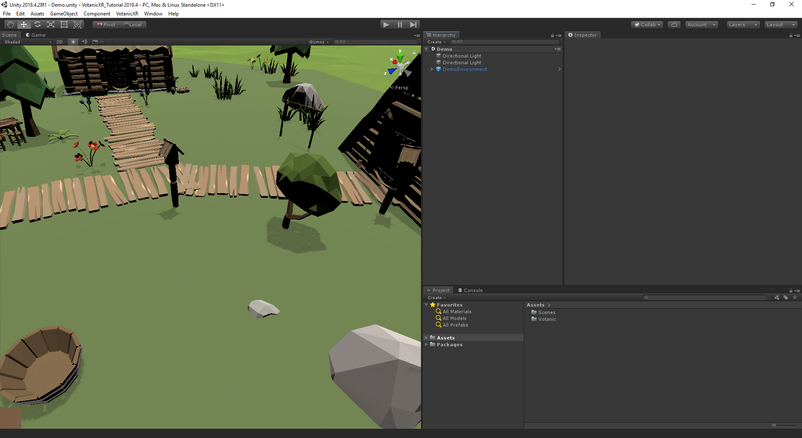

Quick Start
In this article
- Set Up Tutorial Project
- Import VotanicXR
- Add VotanicXR Manager to Scene
- Build the Scene
- Running the Build
Objective
VotanicXR is a Software Development Toolkit of Extended Reality as a plug-in of Unity Engine. This chapter will cover the quick start guide to build and run a basic scene using VotanicXR SDK with different platform.
Conventions in this Tutorial
In this series of tutorial, we will use the following conventions.
Tutorial
Each part of the tutorial consists an objective, a folder with sample scene and script, and detail step of using corresponding component.
Component
The components provided by VotanicXR SDK will using the following naming convention:
Using vGear_Interactable class as example, the component using vGear as prefix, and connect the component with underscore _.
The class will be shown in Unity Inspector with its convention as script component, i.e. V Gear_Interactable (Script).
Code style
The code provided in the tutorial will follow the Code style naming rules of .Net.
Definition
Some useful definition will be introduced here:
- VotanicXR application - The Unity Application using VotanicXR SDK.
- Developer - The developer using VotanicXR SDK to develop application.
- User - The user of the VotanicXR application
- vGear - The prefab of VotanicXR SDK Manager.
- User Transform - The transform of User gameObject in the vGear Prefab.
Set Up Tutorial Project
Download Tutorial Package
Click here to download the Tutorial Package, the package includes the material of the tutorial and the sample scene.
Configure Unity
Configure the following settings before import the VotanicXR SDK:
In
Edit > Project Settings > Player, set theScripting Runtime Versionto .Net 4.x Equivalent if you are using Unity 2018.2.In
Edit > Project Settings > Editor, set theVersion Controlis Visible Meta Files andAsset Serializationis Mixed.In
File > Build Settings, set theArchitectureinto x86_64.If you are using Unity Editor with version 2019 or above, please go to Package Manager and install
Multiplayer HLAPIfor this series of tutorial, detail mentioned here.
Import VotanicXR
Import VotanicXR Package
Import the VotanicXR SDK for Unity:
Right-click in Project
Assets > Import Package > Custom Package, and select the SDK package download.If you are using Unity Editor with version 2018.2, please import
VotanicXR_2020.5.12f2 for 2018.2.unitypackage.If you are using Unity Editor with version 2018.4, please import
VotanicXR_2020.5.12f2 for 2018.4.unitypackage.If you are using Unity Editor with version 2019.2 or above, please import
VotanicXR_2020.5.12f2 for 2019.2+ [Net].unitypackage.In the Importing Package dialog, make sure that all package options are selected and click Import.
Import Tutorial Package
Import the Tutorial Package of VotanicXR:
- Right-click in Project
Assets > Import Package > Custom Package, and select the tutorial package download. - In the Importing Package dialog, make sure that all package options are selected and click Import.
Please import the package after import the VotanicXR Package, for the requirement of the package contents.
Add VotanicXR Manager to Scene
Open Sample Scene
Go to Assets > Votanic > VotanicXR_Tutorial > Tutorial01 and open the demo scene provided.

Add vGear
Add the SDK Manager of VotanicXR vGear to the scene:
Right-click in the Hierarchy window.

Select
VGear > SDK ManagerTwo gameobjects will be shown in the Hierarchy window,
vGearandStartPoint.vGearis the SDK Manager of the VotanicXR system, and the child gameobjects are the features of the the system.StartPointis a gameobject to coordinate the start point of the user.If you are using controllers with
Role System, please selectRole Systemat the[Settings] > XR Supportin componentV Gear (Script)of vGear prefab. We will use the Vive controller and HMD withRole Systemas VR controller in this series of tutorial.
Detail of the components is described in Detail of vGear Components.
Build the Scene
Go to
File > Build Setting.Click
Add Open Scenes.Click
Build, (Note: Recommended to create a new folder to save your build folders).When the build completed, the build folder will be popped out at the new window.
Running the Build
The built folder will contains some batch (.bat) files with the format {Project Name}_[{Environment}].bat.

Double click the batch file with the environment you are using.
By default, to run in Multi Display System, double click the batch file with CAVE, the config will be loaded with the config.vxrc at global floder, will be further introduced in Configurator.
To run in HMD System, double click the batch file with HMD. Note: To use the application with Role System, please follow the instruction.
To run on PC, double click the batch file with PC.
To run a Local Test Configuration, double click the batch file with TEST, the config will be loaded with the config.vxrc at the local folder.